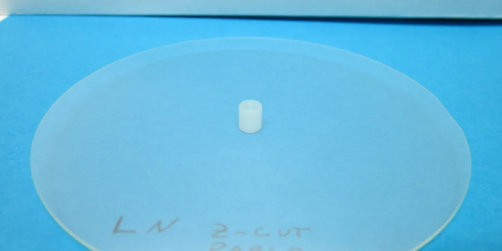

퀀텀 컴퓨팅(QUBT)을 볼 때 주주들이 가장 먼저 확인해야 할 것은 회사 이름이 주는 기대감이 아니라, 포토닉스 제품이 실제 고객 예산으로 얼마나 빠르게 넘어가느냐입니다. 이 회사는 양자컴퓨터라는 단어 하나로 설명하기 어렵습니다. 양자 광학, 통합 포토닉스, 박막 리튬나이오베이트 칩, 양자 보안 통신, 엣지 인공지능 추론 장비가 한 회사 안에 섞여 있습니다. 그래서 좋은 시나리오도 단순하고, 나쁜 시나리오도 단순합니다. 기술 폭이 넓은 만큼 실제 매출 전환 속도가 따라오면 이야기가 커지고, 그렇지 않으면 현금이 많은 초기 기술주로 남습니다.
퀀텀 컴퓨팅의 2026년 1분기 실적 발표에서 가장 눈에 띄는 숫자는 현금·현금성 자산·투자자산 약 14억 달러입니다. 같은 발표에서 1분기 매출은 약 370만 달러였고, 전년 동기 3만9,000달러에서 크게 늘었습니다. 다만 매출의 상당 부분은 2026년 2월 Luminar Semiconductor, 3월 NuCrypt 인수 효과가 반영된 결과입니다. 이 숫자는 성장의 출발점으로 볼 수 있지만, 아직 반복 가능한 제품 매출 구조가 완성됐다고 단정하기에는 이릅니다.
주주 입장에서 핵심 질문은 “양자컴퓨팅 테마가 뜰까”가 아닙니다. 이미 테마는 시장의 관심을 받았습니다. 이제는 회사가 14억 달러 현금을 이용해 어떤 제품을 만들고, 어떤 고객에게 팔고, 어느 정도 손실을 감수하면서 규모를 키울 수 있는지가 중요합니다. QUBT는 재무적으로 시간을 벌었지만, 사업적으로는 매출 품질을 증명해야 하는 구간에 있습니다.
14억 달러 현금은 방어막이지 사업모델은 아닙니다

현금이 많다는 것은 양자컴퓨팅 초기 기업에게 큰 장점입니다. 제품 개발, 인수 통합, 제조 설비 확장, 고객 실증 프로젝트를 몇 분기 만에 끝내기 어렵기 때문입니다. QUBT는 2026년 1분기 말 총자산 약 16억 달러, 총부채 약 2,335만 달러, 주주자본 약 16억 달러를 발표했습니다. 재무제표만 놓고 보면 단기 생존 압박은 작습니다. 투자자가 이 회사를 다른 양자 소형주와 구분해 보는 이유도 여기에 있습니다.
하지만 현금은 사업모델을 대신하지 않습니다. 1분기 영업비용은 약 1,982만9,000달러였고, 영업손실은 약 2,055만 달러였습니다. 순손실은 약 405만 달러였지만, 이 숫자는 이자수익과 파생부채 공정가치 변동 같은 비영업 항목의 영향을 받았습니다. 그래서 주주는 순손익 한 줄보다 매출총손익, 영업손실, 현금 소진 속도를 함께 봐야 합니다. 기술 기업이 돈을 잘 벌기 시작하는지는 영업단에서 먼저 드러납니다.
QUBT가 가진 시간은 값비싼 시간입니다. 현금이 많을수록 회사는 더 많은 선택지를 갖지만, 시장은 그 선택지가 실제 수주와 매출로 이어지기를 기다립니다. 현금 보유가 주가 하방을 일부 막아줄 수는 있어도, 장기 주가를 올리는 힘은 제품 반복 판매에서 나옵니다. 그래서 QUBT의 투자 논리는 “돈이 많다”에서 끝나지 않고 “그 돈으로 어떤 제조 역량을 확보했는가”로 넘어가야 합니다.
매출 370만 달러의 출처가 더 중요합니다
관련 영상
QUBT의 room-temperature quantum 전략을 설명하는 영어 딥다이브 영상
1분기 매출 370만 달러는 전년 동기와 비교하면 극적인 변화입니다. 그러나 이 변화는 주로 Luminar Semiconductor 인수에서 온 것으로 회사가 설명했습니다. 이 말은 좋게 보면 QUBT가 제품 매출을 빠르게 붙일 수 있는 자산을 샀다는 뜻이고, 냉정하게 보면 기존 내부 기술만으로 이미 큰 매출을 만들고 있던 회사는 아니라는 뜻입니다. 인수 매출과 유기적 매출은 가치평가에서 다르게 봐야 합니다.
Luminar Semiconductor 인수는 QUBT의 설명대로라면 포토닉스 신호 체인을 안으로 끌어오는 거래입니다. 레이저, 검출기, 패키징, 제조 역량이 들어오면 박막 리튬나이오베이트 기반 포토닉스 제품을 더 작고 반복 생산 가능한 형태로 만들 수 있습니다. 이 방향은 기술적으로 설득력이 있습니다. 다만 인수는 언제나 통합 리스크를 동반합니다. 고객, 장비, 인력, 생산 일정이 한 회사의 운영 리듬으로 맞춰져야 실제 수익성이 보입니다.
NuCrypt 인수도 같은 방식으로 봐야 합니다. 양자 통신과 보안 제품군을 넓히는 데 의미가 있지만, 인수한 기술이 곧바로 대규모 반복 매출이 되는 것은 아닙니다. 고객은 양자 보안이라는 단어보다 시스템 안정성, 기존 네트워크와의 호환성, 납품 후 유지보수, 규제 요건 충족을 봅니다. QUBT가 다음 실적에서 보여줘야 할 것은 새 기술 목록이 아니라 인수 자산이 얼마나 빨리 매출 파이프라인으로 흡수되는지입니다.
Dirac-3와 NeuraWave는 고객 예산을 통과해야 합니다
QUBT의 제품 이야기는 Dirac-3와 NeuraWave에서 갈립니다. Dirac-3를 Quantum Corridor 네트워크에 배치했다는 발표는 데이터센터 환경에서 양자 최적화 장비 접근성을 높인다는 점에서 의미가 있습니다. 회사는 사기 탐지, 포트폴리오 최적화, 임무 계획, 무인항공시스템 위험 관리 같은 응용을 제시했습니다. 여기서 중요한 것은 “무엇을 풀 수 있나”보다 “누가 비용을 지불하나”입니다.
초기 고객은 새 기술을 좋아한다고 바로 예산을 열지 않습니다. 특히 최적화 장비는 기존 소프트웨어, 클라우드 컴퓨팅, 그래픽처리장치 기반 연산과 비교됩니다. 고객이 QUBT 제품을 선택하려면 더 빠르거나, 더 싸거나, 더 안전하거나, 기존 방식으로 풀기 어려운 문제를 풀어야 합니다. 데모가 고객 미팅을 열어줄 수는 있지만, 반복 계약은 실제 업무 지표가 개선될 때 생깁니다.
NeuraWave 발표는 QUBT를 순수 양자컴퓨터 회사보다 포토닉스 컴퓨팅 회사에 가깝게 보게 만듭니다. 회사는 이 플랫폼이 엣지에서 실시간 인공지능 추론과 신호 처리를 낮은 전력으로 수행하도록 설계됐다고 설명했습니다. 이 시장은 매력적입니다. 통신, 자율주행, 로보틱스, 헬스케어, 산업 모니터링 모두 전력과 지연시간 문제를 갖고 있기 때문입니다. 그러나 이 시장은 경쟁도 치열합니다. QUBT가 이기려면 성능 수치만이 아니라 고객이 장비를 바꿀 이유를 보여줘야 합니다.
주주가 다음 실적에서 볼 숫자
첫 번째 체크포인트는 백로그입니다. QUBT는 2026년 1분기 말 계약 백로그를 약 1,600만 달러로 제시했습니다. 이 규모는 회사의 현재 매출보다 크지만, 14억 달러 현금과 비교하면 아직 작습니다. 투자자는 백로그가 늘어나는지, 그 백로그가 어느 기간에 매출로 바뀌는지, 취소나 지연 가능성은 없는지 봐야 합니다. 백로그가 단순 발표 숫자를 넘어 매출 인식으로 이어져야 주가가 버틸 근거가 생깁니다.
두 번째는 매출총이익입니다. 1분기에는 매출보다 매출원가가 더 커서 매출총손실이 발생했습니다. 초기 인수 통합과 생산 전환기라 어느 정도 설명될 수 있지만, 이 상태가 오래가면 제품을 팔수록 손실이 나는 구조가 됩니다. QUBT가 포토닉스 제조 기업으로 인정받으려면 매출 증가와 함께 매출총이익률 개선이 따라와야 합니다. 특히 Fab 1의 소량 생산 매출이 어느 정도 단가와 원가 구조를 가지는지 중요합니다.
세 번째는 Ciena와의 양자 보안 통신 시연 같은 파트너십이 실제 계약으로 이어지는지입니다. Ciena와의 발표는 양자키분배와 포스트양자암호, 광계층 암호화를 묶은 보안 통신 실증이라는 점에서 방향성이 좋습니다. 다만 실증과 판매는 다릅니다. 좋은 파트너 이름이 붙은 뒤에는 고객 도입, 납품 일정, 반복 주문 여부를 확인해야 합니다.
네 번째는 희석 가능성입니다. 현금이 많아 당장 자금조달 압박은 크지 않아 보이지만, 초기 기술 기업은 인수와 설비 확장, 인력 채용 과정에서 주식 기반 보상과 추가 거래가 생길 수 있습니다. QUBT는 현금이 많다는 장점 때문에 공격적인 확장을 선택할 수 있고, 그 선택이 성공하면 사업 규모가 커집니다. 반대로 매출 전환이 늦어지면 비용은 먼저 늘고 투자자는 희석과 손실을 동시에 걱정하게 됩니다.
퀀텀 컴퓨팅은 흥미로운 회사입니다. 이름은 거대하고, 현금은 충분하며, 포토닉스 제조라는 현실적인 발판도 갖췄습니다. 그러나 투자자가 지금 붙잡아야 할 문장은 “양자컴퓨팅이 미래다”가 아닙니다. 더 정확한 문장은 “QUBT가 포토닉스와 양자 보안 제품을 반복 매출로 바꿀 수 있는가”입니다. 다음 실적에서는 매출 출처, 백로그 전환, 매출총이익, Fab 1 생산 진척, 인수 통합 비용을 순서대로 확인하는 편이 좋습니다.